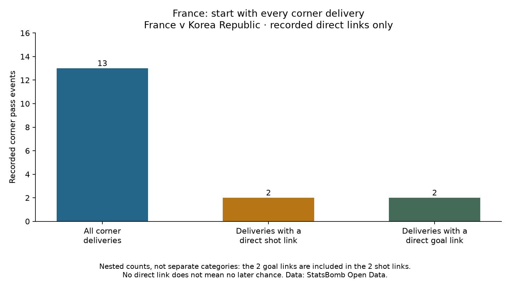

Football analyst training · Project lesson 35
Start with all corner deliveries.
We found two header goals from corners. To put them in context, we now count the deliveries that did not have those outcomes too.
1. The actual calculation
France took 13 recorded corner deliveries. Two have a directly linked shot, and both linked shots became goals.
Recorded direct shot-link rate = 2 / 13 = 15.4% Recorded direct goal-link rate = 2 / 13 = 15.4%

2. Keep every delivery in the denominator
The 13 includes incomplete deliveries. If we kept only completed corners, we would answer a different question. We identify corner Pass events from their type, then follow explicit shot links as in the previous lesson.
3. Be precise about the other eleven
Another pass, a rebound or a recycled clearance could lead to a shot. Our current calculation checks only explicit direct assisting links. We have not analysed the whole attacking phase.
4. Understand why 2 / 2 is different
Both of the two corner-linked header chances were goals: 2/2. But France did not have only two corners. Using all corner deliveries gives 2/13. The denominator changes the question.
Neither number proves future effectiveness. One match is a small sample, and recorded deliveries are not automatically the same as corners awarded.
5. Run and describe
Run 35_corner_delivery_rates.py in Spyder. The script keeps all corner pass events, then counts those with verified shot links. The chart uses nested counts: do not add 13 + 2 + 2.
Write a coach note with the denominator and the direct-link limitation. Ask your teacher to check your explanation or any code line.
Example wording
“Two of France's 13 recorded corner deliveries had directly linked shots, and both became goals. This does not count later chances after additional actions or establish a reliable future conversion rate.”